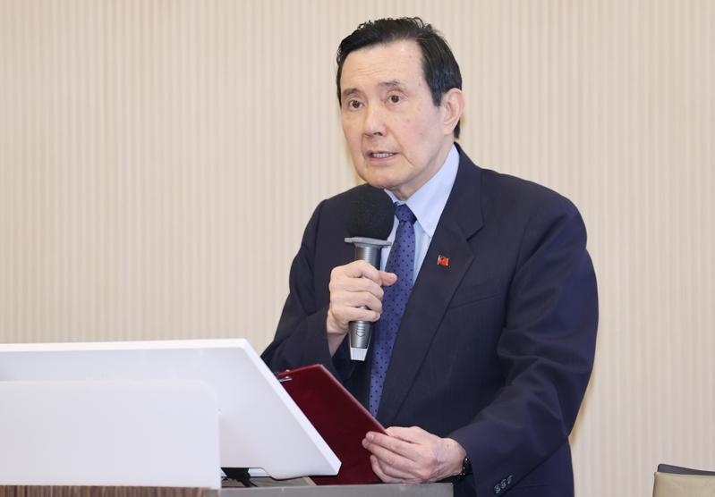

前总统马英九4日在泰国曼谷，以「两岸和平与中华民族的未来」为题发表演说。马英九喊话赖清德总统改变「新两国论」的台独路线，回到中华民国宪法及「两岸人民关系条例」来处理两岸关系；并呼吁美国以及关心台湾的国际友人，要鼓励台湾与大陆对话，这是对各方以及区域安全最有利的方式。
马英九应泰国中华会馆邀请出席第27届「中山讲座」，这是马二度到泰国访问，上一次是1996年，距今已有28年之久，并在演讲结束后，前往中华会馆向国父铜像致敬。
马英九表示，两岸如果走向战争，并不符合两岸人民的利益，也不符合中华民族长远发展的需要。因此，今年初在金门发生的撞船事件，造成两位大陆渔民不幸罹难，这件事情搞了几个月才勉强解决，这是完全没有需要的。
马英九指出，今年4月他与习近平在北京会面时表达，如果两岸发生战争，将是中华民族不可承受之重。双方都应该重视人民所珍惜的价值与生活方式，维护两岸和平，以中华文化蕴涵的智能，确保两岸互利双赢。
他说，习近平态度非常柔软谦和，表示只要两岸都认同自己是中华民族，任何事情都可以坐下来谈，也说两岸交流要继续，并期盼台湾民众多来大陆走走，大陆民众也多去台湾看看。他认为，这是习对台湾民众释出的善意与诚意，也是营造赖清德总统上任后的运作空间。
马英九表示，很遗憾，赖总统并没有接下这份善意，也没有善意回应「中华民族」这个概念，甚至放任陆委会政府官员胡说「炎黄子孙只是远古传说」，用如此拙劣无知的荒谬说法，冷血与鄙夷的态度面对中华文化，令他反感、痛心、与忧虑。
马英九说，赖清德总统于520就职演说中，公开宣示「中华民国和中华人民共和国互不隶属」的「新两国论」台独路线，引发陆方强烈的反应，不只发动大规模围台军演，更进一步公布关于惩戒台独势力的规定。
他要再次呼吁赖总统改变「新两国论」的台独路线，回到中华民国宪法及「两岸人民关系条例」来处理两岸关系，以两岸和平、台湾百姓安全为念，回归宪法「一中原则」，重建两岸互信，这不只是中华民国总统的义务，也能为两岸及区域带来和平。「新两国论」对台湾安全与两岸和平毫无益处，只会埋下仇恨、不安与动乱的种子。
至于两岸是否会发生战争？马英九说，他始终认为「并非不可能，但机会不大」但关键是两岸要能够谨慎处理彼此关系。备战有其必要，但高昂军费对台湾来说是沉重的负担，尤其若军购变成美国总统候选人川普口中缴「保护费」的荒谬、轻蔑说法，国防预算等于是钱坑法案，会拖垮台湾的财政，只会图利美国的军工复合体。
马英九重申，基于长远考量，台湾应寻求以和平方式解决争端，用对话取代战争，进而创造两岸双赢，他执政的八年，就是最好的实践。他要呼吁美国以及关心台湾的国际友人，要鼓励台湾与大陆对话，这是对各方以及区域安全最有利的方式。但是两岸的问题两岸自己解决，没有美国或其他外国介入的空间。
马英九说，民进党政府要认清现实，美国不可能为了台湾牺牲自己的子弟，两岸若发生战火，死伤的都是两岸的中国人。从伊拉克、阿富汗到乌克兰，代理人战争只会造成战区生灵涂炭、百业凋零，台湾绝不能当别人的棋子，两岸的未来发展应由两岸人民自己以和平、民主的方式共同决定。
马英九说，唯有两岸和平稳定，才能确保中华民族的未来。两岸如果发生战火，对中华民族将是不可承受之重，他诚挚期盼，双方都应重视人民珍惜的价值与生活方式，维护两岸和平，以中华文化蕴涵的智能，确保两岸互利双赢。